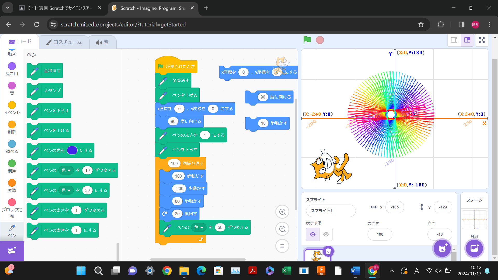
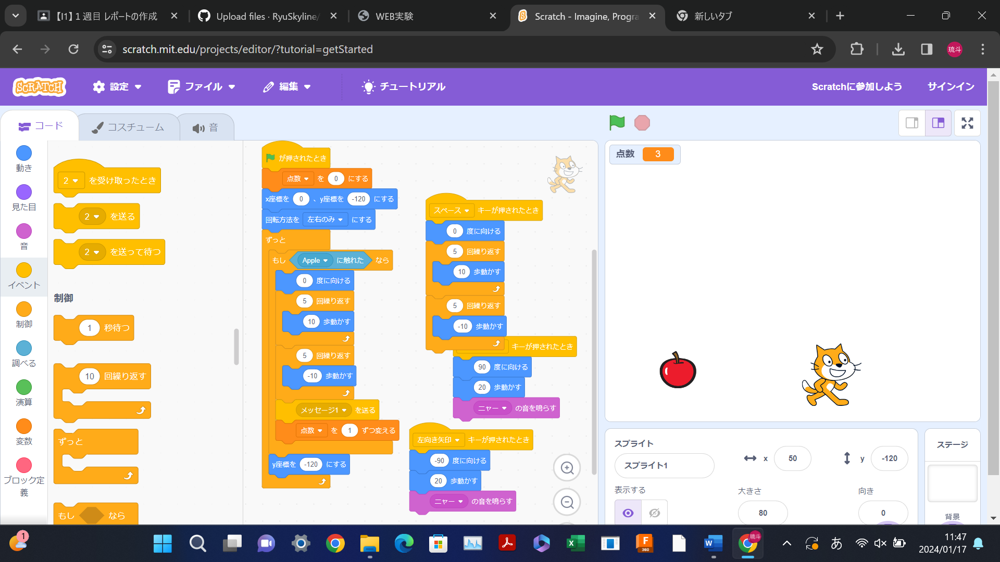

1週目のレポート ： 公大高専１年実習I-1
4班29番 RyuSkyline
第1週目
1-1 サイエンスアート

1.内容
スクラッチを使って線を書くプログラムを作りました。真ん中に小さい円ができるように棒を何十にも配置した。綿毛を意識した。
2.感想
楽しかった。数値を少しずつ変えることで形が少しずつ変化していき、大きく変化するタイミングもあったので面白かった。
1-2 ゲーム

1.内容
矢印キーを押すとその向きに動きスペースを押すとジャンプし上から降ってくるリンゴをゲットすると同時にジャンプするようにしました。 ポイントも付くようにしました。
2.感想
楽しかった。だが手こずった。リンゴが地面につくとゲームオーバーになるプログラムを作りたかったが、リンゴがプレイヤーに触れると隠れる仕組みになっていたのでゲームオーバーの仕組みがうまく作動しませんでした。
1-3 ホームページ作成
私のホームページ
1.内容
自己紹介を書いた。
2.感想
英語ばかりで難しく手こずった。先生の説明を聞きながらじゃないとできない状態だった。